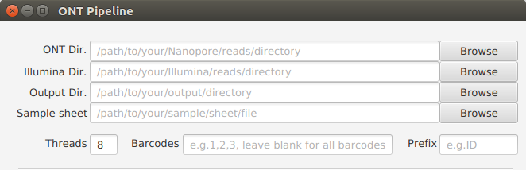

General Settings¶
ONT Dir. (Required)¶
Set the path to the Nanopore reads directory.
Note
- Example:
/path/to/your/ONT/reads/directory
Illumina Dir. (Optional/Required)¶
Set the path to the Illumina reads directory.
Note
- Example:
/path/to/your/Illumina/reads/directory - Required if “hybrid-assembly” or/and “polishing” is/are used.
Warning
- If the structure of Illumina reads filename is Prefix_{1,2}.fastq.gz (for example: ID40_1.fastq.gz, ID40_2.fastq), these Illumina reads will be trimmed.
- If the structure of Illumina reads filename is Prefix_HQ_{1,2}.fastq.gz (for example: ID40_HQ_1.fastq.gz, ID40_HQ_2.fastq), these Illumina reads will not be trimmed.
Output Dir. (Required)¶
Set the path to the output directory.
Note
- Example:
/path/to/your/output/directory
Sample sheet (Optional)¶
Set the path to the sample sheet file.
Note
- The sample sheet file type must be CSV or TSV.
Warning
- Underscore(‘_’) is not allowed in the sample name.
Prefix (Optional)¶
Set the prefix for the Nanopore reads after demultiplexing.
Note
- Example: ID .
- Default: barcode .
Barcodes (Optional)¶
Set which barcodes will be analyzed. Put in the numbers and separate them with a comma.
Note
- Example: 1,2,3,4
- If you want to analysis all barcodes, leave it blank.